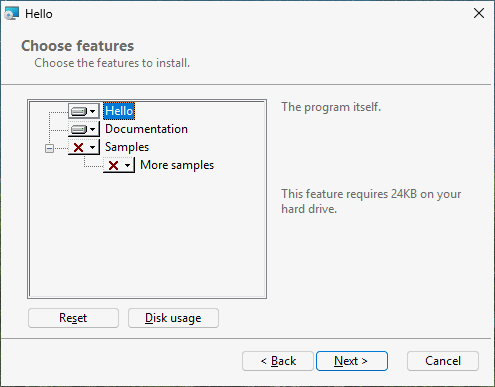

8 Optional parts: features and the user's choices
Goal: let the user choose what to install. The program itself is always installed; the documentation is offered and ticked; the samples are offered but not ticked; a diagnostics part is hidden and installed only on request.
8.1 Features#
A feature is a part of the product the user can choose: a line in the installer's tree with a title, a description and a tick. Every file belongs to exactly one feature; a feature holds as many files as you like.
8.2 The source#
# tutorial 08: hello.toml
format = 1
[package]
name = "Hello"
manufacturer = "Example Software"
version = "$(VERSION)"
arch = "x64"
upgrade-code = "{3F2A6C1D-8B4E-4F7A-9C2D-5E6F7A8B9C0D}"
ui = "features"
license = "LICENSE.txt"
[define]
VERSION = "1.6.0"
[feature.Main]
title = "Hello"
description = "The program itself."
required = true
[feature.Documentation]
title = "Documentation"
description = "The guide, in the docs folder."
[feature.Samples]
title = "Samples"
description = "Example files to try Hello with."
level = 2
[feature.MoreSamples]
title = "More samples"
description = "Samples in sub folders."
parent = "Samples"
follow-parent = true
[feature.Diagnostics]
title = "Diagnostics"
hidden = true
level = 3
[dir.INSTALLDIR]
path = "$(ProgramFiles)/Hello"
feature = "Main"
[dir.DocsDir]
path = "$(INSTALLDIR)/docs"
feature = "Documentation"
[dir.SamplesDir]
path = "$(INSTALLDIR)/samples"
feature = "Samples"
[dir.MoreSamplesDir]
path = "$(INSTALLDIR)/samples/sub"
feature = "MoreSamples"
[file.Hello]
dir = "INSTALLDIR"
source = "dist/hello.exe"
[files.DocFiles]
dir = "DocsDir"
glob = "dist/docs/**"
[files.SampleFiles]
dir = "SamplesDir"
glob = "dist/samples/*.txt"
[files.MoreSampleFiles]
dir = "MoreSamplesDir"
glob = "dist/samples/sub/*.txt"
[file.Readme]
dir = "INSTALLDIR"
source = "dist/readme.txt"
feature = "Diagnostics"
[shortcut.StartMenu]
dir = "Programs"
name = "Hello"
target = "file:Hello"8.3 Declaring features: [feature.ID]#
| Key | Meaning |
|---|---|
title | the line in the tree |
description | the text shown when the line is selected |
level | 1 (default): installed by default. 2 or more: offered, but only installed when chosen |
required = true | always installed: the tree does not offer "will be unavailable" for it |
parent = "Samples" | a line under another feature in the tree |
follow-parent = true | installed exactly when its parent is |
hidden = true | not shown in the tree at all |
Feature IDs share one name space with dirs and files: Documentation the feature and DocsDir the folder must have different IDs (rubrapack says so with RP1301 otherwise).
8.4 Putting files in features: feature#
- On a dir: every file in that folder belongs to the feature -
DocsDirputsguide.txtinDocumentation,SamplesDirputssample1.txtinSamples. - On a file or a file group: that file (or group) belongs to it, whatever its folder -
Readmeis inINSTALLDIR, a folder ofMain, but belongs toDiagnostics.
A dir does not pass its feature on to the dirs below it: MoreSamplesDir names its own. As soon as the source declares one feature, everything installed needs one; rubrapack stops with RP1202 naming what has none.
8.5 What the user sees#
With ui = "features", after the license and the install folder comes "Choose features": a tree
[x] Hello (cannot be turned off)
[x] Documentation
[ ] Samples
[ ] More samples (follows Samples)Each line has a menu: "Will be installed on local hard drive", "Entire feature will be installed on local hard drive", "Entire feature will be unavailable". Selecting a line shows its description and the disk space it needs; "Disk Usage" shows the space on every drive. (These texts come from Windows and stay English.) Diagnostics does not appear.
A default installation (double-click, Next, Next, ...) installs Hello and the documentation.

8.6 Choosing from the command line#
Features are chosen with properties, so a silent installation can choose too:
| Command | Installs |
|---|---|
msiexec /i hello.msi /qn | the defaults: Main, Documentation |
msiexec /i hello.msi /qn ADDLOCAL=Samples | the defaults and the samples (with More samples, which follows) |
msiexec /i hello.msi /qn ADDLOCAL=ALL | every feature, hidden ones included |
msiexec /i hello.msi /qn INSTALLLEVEL=3 | every feature whose level is 3 or less: all of these |
msiexec /i hello.msi /qn REMOVE=Documentation | the defaults without the documentation |
Feature IDs are case-sensitive and separated by commas: ADDLOCAL=Samples,Diagnostics. required only binds the tree: REMOVE=Main on the command line is still obeyed (that is how Windows Installer works).
8.7 Changing the choice later#
After installation, Installed apps offers Modify for Hello; it opens the installer's maintenance page with Change, Repair and Remove. Change shows the same tree with what is installed ticked; the user adds or removes parts. From the command line on an installed product:
msiexec /i hello.msi ADDLOCAL=Samples
msiexec /i hello.msi REMOVE=Samples8.8 What happened inside#
C:\work\hello> rubrapack inspect hello.msi Feature
Feature Feature_Parent Title Description Display Level Directory_ Attributes
...
Diagnostics Diagnostics 0 3 0
Documentation Documentation The guide, in the docs folder. 3 1 0
Main Hello The program itself. 1 1 16
MoreSamples Samples More samples Samples in sub folders. 7 1 2
Samples Samples Example files to try Hello with. 5 2 0Displayorders the tree (odd numbers, in the order of the source); 0 hides the feature.Levelis the level; Windows installs a feature by default when its level is not above the propertyINSTALLLEVEL, which is 1.Attributesare bit flags: 16 means "may not be made absent" (required), 2 "follow the parent".
The FeatureComponents table ties each component - each file - to its feature:
C:\work\hello> rubrapack inspect hello.msi FeatureComponents
...
Documentation C_a10be66379e69940a2e0
Main C_185f8db32271fe25f561
Samples C_a5674982edf0797da30f
...